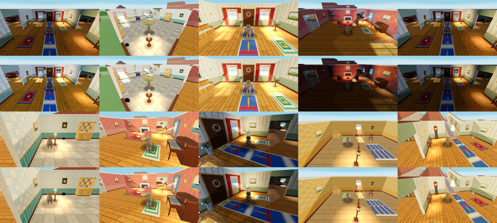

Rows 1 and 3: before (main). Rows 2 and 4: this branch. Same shots, same play camera at 1280x720 (page: verify-oldhouse-beauty.html via scripts/record-page.mjs; new param mood=, with now=, rain=, warp=).
Top pair, left to right: 1. Storm night (rain, 10 pm), caught in a lightning flash. 2. Sunny morning (8 am) in the kitchen: brighter window squares, steam over the range. 3. Snowy winter afternoon, hall windows. 4. Candlelight evening in the parlour: lamps out, hearth and sconces only. 5. The same storm night between flashes: dark, warm lamps, streaking panes.
Bottom pair: legibility shots of passes 1-5: mouse, dog, moths at night, spider, ghost cat.

Honest read: candlelight and the storm lull are clearly different. The storm flash looks like a bright day frame against the dark lull (the page's sky stays day-blue). The sunny morning's change is mild (steam, brighter squares). The winter shot differs little at this size (soft white, small flakes on the panes). The legibility shots barely differ: the creatures are still small points and several were not in frame at these warp times, so that part is unproven by this sheet.